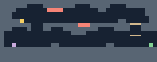
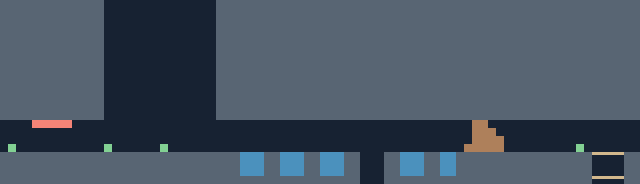
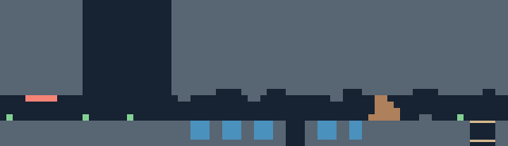
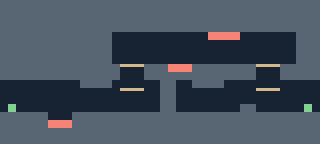
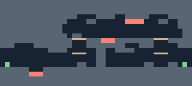

Reference: your edited Deep Lake (c4). Four other rooms now use irregular rock profiles and connected pool shelves. World positions, room sizes, hazards, ladders, collectibles and entrances are preserved; Cove Tunnel’s pool has a shallow side shelf.
Gray: rock · blue: water · tan: platforms · red: spikes · gold: legacy collectible · green: spawn.




